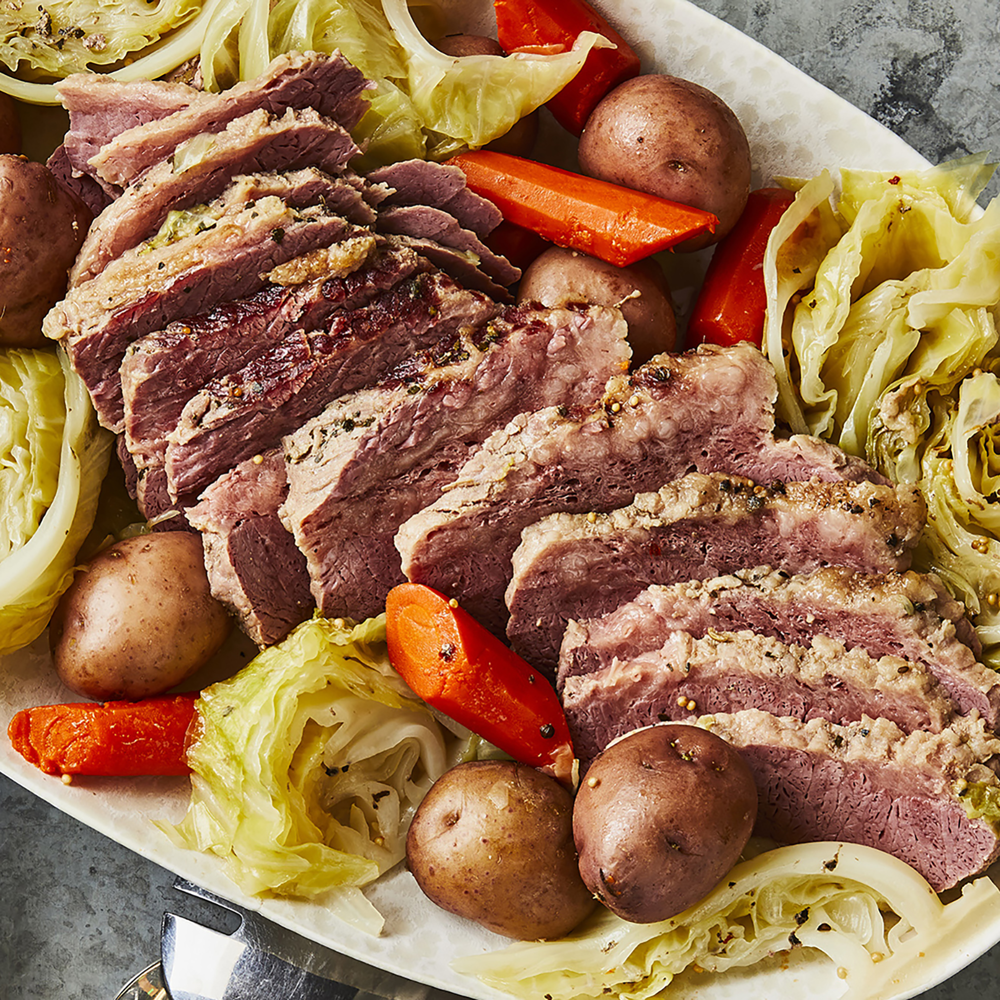

Corned Beef and Cabbage

Description
What's more Irish than a traditional recipe for corned beef and cabbage? Serve with mustard or horseradish if desired.
Ingredients
- 1 (3 pound) corned beef brisket with spice packet
- 10 small red potatoes
- 5 medium carrots
- 1 large head cabbage
Steps
- Place corned beef and seasoning packet in a Dutch oven, cover with water, and bring to a boil. Reduce to a simmer and cook until the meat is tender.
- In the meantime, cut the red potatoes in half and cut the cabbage into wedges. Peel and cut the carrots.
- When the meat is tender, add potatoes and carrots to the Dutch oven and cook until they're tender. Add the cabbage and cook for about 15 more minutes.
- Remove the meat from the Dutch oven and let it rest for about 15 minutes. Slice across the grain and serve with vegetables and broth.
Return to Home Page